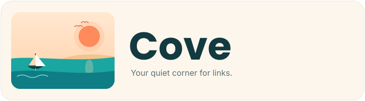

A bookmark manager for Obsidian with four switchable layouts. YAML frontmatter under a folder of your choice — no proprietary database, no lock-in.
Capabilities
One .md per bookmark, read and written through Obsidian's own file APIs — so nothing ever leaves plain text.
No proprietary database and no cache you depend on. Disable Cove and every bookmark is still a plain note in your vault.
List, Cards, Board, and Tree-with-preview — all rendering the same underlying files, switchable in a click.
Title, description, cover image, favicon, author, and reading time are fetched and written into frontmatter as you add a URL.
Match across title, description, domain, URL, tags, and each bookmark's notes — with results highlighted in place.
Folders map to actual vault subfolders with drag-to-move; tags carry autocomplete, filters, and custom icons.
Background checks flag broken links and restore them when they recover, and Netscape HTML import/export moves bookmarks in and out of any browser.
Workflow
Open Settings → Community plugins → Browse, search for Cove, then install and enable.
In Cove's settings, choose the folder where bookmark files are stored. It defaults to Bookmarks.
Click the ribbon icon or run “Add bookmark.” The URL is fetched, metadata parsed, and saved as a Markdown file.
Get started
Real-Fruit-Snacks/Cove.main.js, manifest.json, and styles.css from the latest release..obsidian/plugins/cove/.